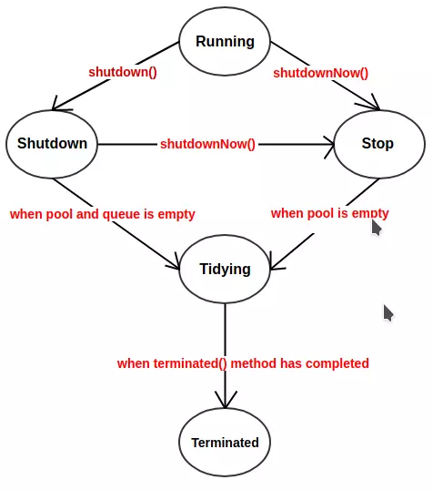

Java并发学习-四
线程池
概述


使用线程池好处
- 降低资源消耗，重复利用已创建线程
- 提高响应速度，任务可以不创建就立即执行
- 提高线程可管理性，线程池统一分配，监控
Executor框架接口
Executor接口
1 | public interface Executor { |
启动线程：
1 | Thread t = new Thread(); |
ExecutorService接口
一般使用该接口
1 | ExecutorService executor = Executors.newFixedThreadPool(args...); |
ThreadPoolExecutor
ThreadPoolExecutor 是 JDK 中的线程池实现，这个类实现了一个线程池需要的各个方法，它实现了任务提交、线程管理、监控等等方法。
构造函数及重要属性
1 | public ThreadPoolExecutor(int corePoolSize, |
- corePoolSize：核心线程数量，默认不会被回收
- maximumPoolSize：最大线程数量，线程池能容纳的最大容量，上限被CAPACITY限制（2^29-1）。corePoolSize到maximumPoolSize之间的线程会被回收
- keepAliveTime：如果线程数超过corePoolSize，有些线程空闲时间超过该值，执行关闭这些线程
- unit：keepAliveTime单位
- workQueue：存放任务的队列，添加任务时如果当前线程数超过corePoolsize，向该队列添加任务，线程池中的线程负责到队列中拉取任务
- threadFactory：创建线程的工厂类
- handler：任务执行失败使用handler通知调用者，默认为抛出异常。
线程池状态
1 | private final AtomicInteger ctl = new AtomicInteger(ctlOf(RUNNING, 0)); |
- Running：接受新任务，处理队列中的任务
- Shutdown：不接受提交新任务，处理等待队列中的任务
- Stop：不接受提交新任务，不处理队列中任务，中断正在执行的线程
- Tidying：所有任务销毁，执行terminated()
- Terminated：terminated()结束后

拒绝策略
队列和线程池都满了，线程池饱和，采取一种策略处理提交的新任务。
线程池框架提供四种策略：
- AbortPolicy：直接抛出异常。（默认策略）
- CallerRunsPolicy：只用调用者所在线程来运行任务。
- DiscardOldestPolicy：丢弃队列里最近的一个任务，并执行当前任务
- DiscardPolicy：不处理，丢弃。
Executors
工具类，提供工厂方法创建不同类型的线程池。
四种常用线程池
- **newFixedThreadPool(int Threads)**：创建固定数目线程的线程池
- **newCachedThreadPool()**：创建一个可缓存的线程池，调用execute 将重用以前构造的线程（如果线程可用）。如果没有可用的线程，则创建一个新线程并添加到池中。终止并从缓存中移除那些已有 60 秒钟未被使用的线程。
- **newSingleThreadExecutor()**：创建一个单线程化的Executor。
- **newScheduledThreadPool(int corePoolSize)**：建一个支持定时及周期性的任务执行的线程池，多数情况下可用来替代Timer类。
问题
一般不建议使用Executors创建。使用Executors创建线程池可能会导致OOM(OutOfMemory ,内存溢出)
正确创建线程池
直接调用ThreadPoolExecutor的构造函数来自己创建线程池
1 | ExecutorService executor = new ThreadPoolExecutor(10, 10, |
使用Guava的ThreadFactoryBuilder创建，不仅可以避免OOM的问题，还可以自定义线程名称，更加方便的出错的时候溯源。
1 | public class ExecutorsDemo { |
总结
线程创建时机
- 当前线程数少于corePoolSize，提交任务时新建一个新线程，有该线程执行这个任务
- 如果当前线程数已经达到corePoolSize，将提交的任务添加到队列中，等待线程池中的线程取队列中取任务。
- 如果队列已满，就创建新的线程执行任务，需要保证线程池中的线程数不超过maximumPoolSize，如果超过，执行拒绝策略。
参考
- Javadoop - 深度解读 java 线程池设计思想及源码实现
- 掘金 - 深入理解 Java 线程池：ThreadPoolExecutor
- 掘金 - 重走JAVA之路（五）：面试又被问线程池原理？教你如何反击
- Java中线程池，你真的会用吗？
- 方腾飞等. Java并发编程的艺术. 机械工业出版社, 2015.